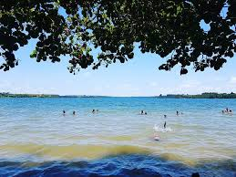

| CIDADE | DESCRITIVO |
|---|---|
 |
HISTÓRIAA Lagoa Nova em Linhares, Espírito Santo, é um dos principais pontos turísticos da cidade. Diferente de um bairro, trata-se de um paraíso natural com águas límpidas que variam entre tons de verde e azul, ideal para quem busca tranquilidade e contato com a natureza. |
A Lagoa Nova é um dos tesouros naturais de Linhares, Espírito Santo, e um ponto de lazer muito apreciado na região. Caracterizada por suas águas límpidas que exibem uma encantadora variação de tons de verde e azul, a lagoa oferece um refúgio de paz e tranquilidade para quem busca escapar da rotina urbana. |
|